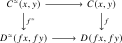

We define \(\Z_{\geq -2}=[0]\sqcup [0]\sqcup\N\). The two objects obtained by the contribution of \([0]\sqcup [0]\) are called \(-2\) and \(-1\). We define \(-2+1=-1\) and \(-1+1=0\). Since \(n+1\) is already defined for \(n : \N\), this defines a successor operation on \(\Z_{\geq -2}\) starting at \(-2\). Iterating Lemma 10.2.14 gives an equivalence \(\N\iso\Z_{\geq -2}\). In particular, we can do induction starting from \(-2\). We will often write \(n\geq -2\) instead of \(n : \Z_{\geq -2}\).
We will now discuss the hierarchy of \(n\)-truncated functors for \(n \geq -2\).
Definition 11.3.1 (\(n\)-truncated functors). We fix a category \(U\) with pullbacks as well as with a terminal object \(*\). For an integer \(n \geq -2\), we inductively define what it means for a morphism \(f\colon A \to B\) in \(U\) to be \(n\)-truncated:
• When \(n = -2\), we say \(f\) is \((-2)\)-truncated if it is an equivalence;
• For \(n : \Z_{\geq -2}\), we say \(f\) is \((n+1)\)-truncated if the map \(\Delta_f:=(1_A,1_A)\colon A \to A \times_B A\) to the pullback of \(f\) along itself is \(n\)-truncated.
An object \(A\) of \(U\) is called \(n\)-truncated if the map \(A \to *\) is \(n\)-truncated.
Definition 11.3.2 (Locally \(n\)-truncated functors). A functor \(f\colon A\to B\) is locally \(n\)-truncated if for each pair of objects \(x,y:A^\simeq\), the map of animae \(A(x,y)\to B(fx,fy)\) is \(n\)-truncated. A category \(A\) is called locally \(n\)-truncated, if every hom anima \(A(x,y)\) is \(n\)-truncated.
Remark 11.3.3.
• A category \(C\) is \((-2)\)-truncated if and only if it is contractible (Definition 1.1.6)
• A functor \(F\colon C\to D\) is \((-1)\)-truncated if and only if it is an embedding (Definition 1.6.19)
• A functor \(F\colon C\to D\) is locally \((-2)\)-truncated if and only if it is fully faithful.
Exercise 11.3.4. Show that if a category \(C\) is \(0\)-truncated, then \(C\star[0]\) is also \(0\)-truncated. Show moreover that if every automorphism in \(C\) is an identity, then the same holds in \(C\star[0]\).
Proposition 11.3.5. Any functor that commutes with pullbacks preserves \(n\)-truncated morphisms. Any functor that preserves pullbacks and terminal objects preserves \(n\)-truncated objects.
Proof
Induct on \(n\), using preservation of equivalences for \(n=-2\) and the identification \(F(\Delta_f) = \Delta_{F(f)}\) for the induction step. The object statement follows by applying this to \(A\to *\).
Proposition 11.3.6. Assume that the ambient category \(U\) is locally small. A morphism \(f\colon A\to B\) is \(n\)-truncated in a category \(U\) if and only if, for any object \(X : U^\simeq\), the induced map \[ f_*\colon\Hom_U(X,A)\to\Hom_U(X,B) \] is \(n\)-truncated in \(\An\).
Proof
The Yoneda embedding of \(U\) is conservative and commutes with limits, whereas equivalences in a presheaf category are detected objectwise. Induction on \(n\) therefore gives the assertion.
Lemma 11.3.7 (Truncation levels are cumulative). Let \(-2 \leq n \leq m\). Then every \(n\)-truncated morphism is also \(m\)-truncated.
Proof
It suffices to prove the case \(m=n+1\). Induct on \(n\): the diagonal of an equivalence is an equivalence, and the induction step follows by applying the induction hypothesis to the relative diagonal.
Proposition 11.3.8 (Closure properties of \(n\)-truncated maps). Let \(n\geq -2\).
(1) Consider morphisms \(A\xrightarrow{f} B \xrightarrow{g} C\) and assume that \(g\) is \(n\)-truncated. Then \(f\) is \(n\)-truncated if and only if \(gf\) is \(n\)-truncated.
(2) \(n\)-truncated functors are closed under fiber products, retracts and base change.
(3) For every map of animae \(u\colon \Gamma\to \Gamma'\), \(n\)-truncated functors are preserved by dependent sum and dependent product along \(u\).
Proof
We prove the three assertions simultaneously by induction on \(n\). For \(n=-2\), they reduce to the corresponding closure and cancellation properties of equivalences. Dependent sum does not change the underlying morphism, while dependent product preserves equivalences.
Suppose the assertions have been proved for \(n\), and consider \(A\xrightarrow{f}B\xrightarrow{g}C\) with \(g\) \((n+1)\)-truncated. There is a factorization of relative diagonals \[ A\xrightarrow{\Delta_f}A\times_BA \longrightarrow A\times_CA, \] whose composite is \(\Delta_{gf}\). The second morphism is the base change of \(\Delta_g\colon B\to B\times_CB\), hence is \(n\)-truncated by the induction hypothesis. The cancellation assertion in degree \(n\) now shows that \(\Delta_f\) is \(n\)-truncated if and only if \(\Delta_{gf}\) is \(n\)-truncated. This proves the first assertion in degree \(n+1\).
The relative diagonal of a base change of a morphism is the corresponding base change of its relative diagonal. The induction hypothesis therefore proves stability under base change. Composites of \((n+1)\)-truncated morphisms are \((n+1)\)-truncated by the first assertion, and fiber products of such morphisms are obtained by composing base changes. Finally, the relative diagonal of a retract is a retract of the relative diagonal. Stability under retracts follows from the induction hypothesis.
It remains to consider a map of animae \(u\colon\Gamma\to\Gamma'\). Truncation in a slice is computed on the underlying morphism, since its relative diagonals are formed by the same pullbacks as in \(\Cat\). Dependent sum along \(u\) is composition with \(u\), so it leaves that underlying morphism unchanged. Dependent product along \(u\) exists because a map between animae is a cocartesian fibration by Corollary 4.5.22, and hence is exponentiable. It preserves pullbacks by Lemma 3.5.8, and it sends the terminal object \(\id_\Gamma\) of \(\Cat_{/\Gamma}\) to the terminal object \(\id_{\Gamma'}\) of \(\Cat_{/\Gamma'}\). Hence Proposition 11.3.5 shows that dependent product preserves \((n+1)\)-truncated morphisms.
Lemma 11.3.9 (Truncation is fiberwise). Consider functors \(C\xrightarrow{f} D \to \Gamma\) with anima \(\Gamma\) and categories \(C\) and \(D\). Then \(f\) is \(n\)-truncated if and only if \(f_\gamma\) is \(n\)-truncated for each object \(\gamma : \Gamma\).
Proof
If \(f\) is \(n\)-truncated, then every \(f_\gamma\) is \(n\)-truncated by stability under base change. Conversely, the assertion that \(f_\gamma\) is \(n\)-truncated is formulated in context \(\gamma\colon\Gamma\); applying it to the universal element \(\id_\Gamma\) proves that \(f\) is \(n\)-truncated.
For animae, the truncation level can be fully determined by looking at the identity types.
Proposition 11.3.10. Let \(f\colon X\to Y\) be a map of animae and \(n\geq -1\). Then \(f\) is \(n\)-truncated if and only if for all objects \(x,y : X\), the induced map \(X(x,y)\to Y(fx,fy)\) is \((n-1)\)-truncated.
Proof
Apply Lemma 11.3.9 to \(X\xrightarrow{f} X\times_Y X \to X \times X\) and observe that base-changing the diagonal \(\Delta_f\) to \((x,y) : X \times X\) precisely yields the map \(X(x,y)\to Y(fx,fy)\).
Remark 11.3.11. Let \(X\) and \(Y\) be animae. In type theoretic language we can therefore define \[ \isTruncated(-2, X) := \isContr(X) \] and \[ \isTruncated(n+1, X) := \prod_{x,y : X} \isTruncated(n,X(x,y)) \] for all \(n\geq -2\). Moreover, it follows from Lemma 11.3.9 (with \(X=C\) and \(Y=D=\Gamma\)) that for any map \(f\colon X\to Y\) we have the bi-implication \[ \isTruncated(n, f) \leftrightarrow \prod_{y : Y}\isTruncated(n, X_y). \]
Lemma 11.3.12 (Truncation of functor categories). For every \(n\)-truncated functor \(C\to D\), the induced map \begin{equation} \Fun(T,C)\to \Fun(T,D) \tag{11.3}\end{equation} is again \(n\)-truncated for every category \(T\). If \(C\) is \(n\)-truncated, then so is \(\Fun(T,C)\).
Proof
This is a particular case of Proposition 11.3.5.
For categories, the situation is slightly more complicated, since being truncated involves a condition both on identity types and on hom animae.
Proposition 11.3.13. [Characterization of \(n\)-truncated functors] Let \(f\colon C\to D\) be a functor and \(n\geq -2\). The following are equivalent:
(1) The functor \(f\) is \(n\)-truncated.
(2) The map of animae \(\Map([1], f)\colon\Map([1],C)\to \Map([1],D)\) is \(n\)-truncated.
(3) The functor \(f\) is locally \(n\)-truncated and induces an \(n\)-truncated map of animae \(f^\simeq\colon C^\simeq\to D^\simeq\).
Proof
We first prove the equivalence between (1) and (2) by induction on \(n\). The case \(n=-2\) is Corollary 6.3.9. The induction step follows because \(\Map([1],-)\) preserves pullbacks and therefore carries the relative diagonal of \(f\) to the relative diagonal of \(\Map([1],f)\).
We next compare (2) and (3). If \(\Map([1],f)\) is \(n\)-truncated, then so is \(f^\simeq\), since the latter is a retract of the former. We may therefore assume that \(f^\simeq\) is \(n\)-truncated. Applying Lemma 11.3.9 to \[ \Map([1],C)\xrightarrow{\alpha} \Map([1],D)\times_{D^\simeq\times D^\simeq} (C^\simeq\times C^\simeq) \longrightarrow C^\simeq\times C^\simeq \] shows that \(f\) is locally \(n\)-truncated if and only if \(\alpha\) is \(n\)-truncated. Moreover, \(\Map([1],f)\) factors as \[ \Map([1],C)\xrightarrow{\alpha} \Map([1],D)\times_{D^\simeq\times D^\simeq} (C^\simeq\times C^\simeq) \longrightarrow \Map([1],D). \] The second morphism is a base change of \(f^\simeq\times f^\simeq\), hence is \(n\)-truncated. The cancellation property in Proposition 11.3.8 now shows that \(\Map([1],f)\) is \(n\)-truncated if and only if \(\alpha\) is \(n\)-truncated. This proves the remaining equivalence.
Proposition 11.3.14. Let \(n\geq -2\). Every locally \(n\)-truncated functor is \((n+1)\)-truncated. In particular, every locally \(n\)-truncated category is \((n+1)\)-truncated.
Proof
The case \(n=-2\) is exactly the statement that every fully faithful functor
is an embedding;
this follows from
Proposition 6.4.6
and
Corollary 3.2.3.
Now let \(n\geq -1\) and let \(f\colon C\to D\) be locally \(n\)-truncated.
By Lemma 11.3.13
we only have to show that \(f^\simeq\) is \(n+1\)-truncated.
Let \(x,y: C^\simeq\).
Then we have a commutative diagram of animae

Corollary 11.3.15. Every \((-1)\)-truncated functor is conservative. In particular, every \((-1)\)-truncated category is an anima.
Proof
Let \(f\colon C\to D\) be a \((-1)\)-truncated functor. Let \(x,y:C^\simeq\) and \(u : C(x,y)\) such that \(f(u)\) is invertible. Since the map \(C^\simeq(x,y)\to D^\simeq(fx,fy)\) is an equivalence we find an invertible arrow \(v : C^\simeq(x,y)\) with \(f(v)=f(u)\). But that implies \(v=u\) in \(C(x,y)\) because \(f\) is an embedding. It follows that \(u\) is invertible. Since \(u\) was arbitrary, \(f\) is conservative.
The second statement is the special case where \(D=*\).